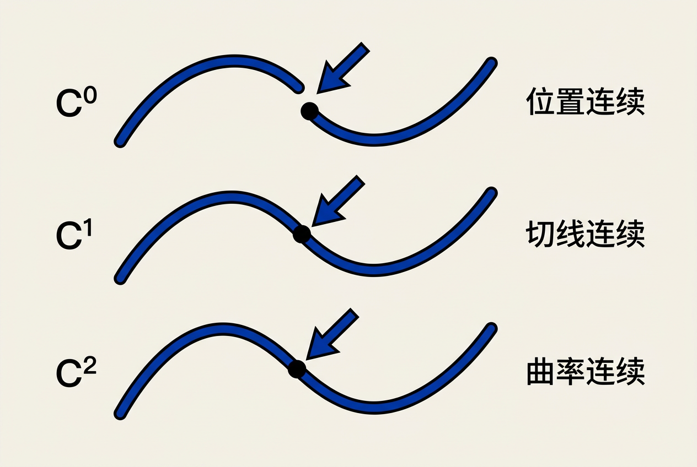
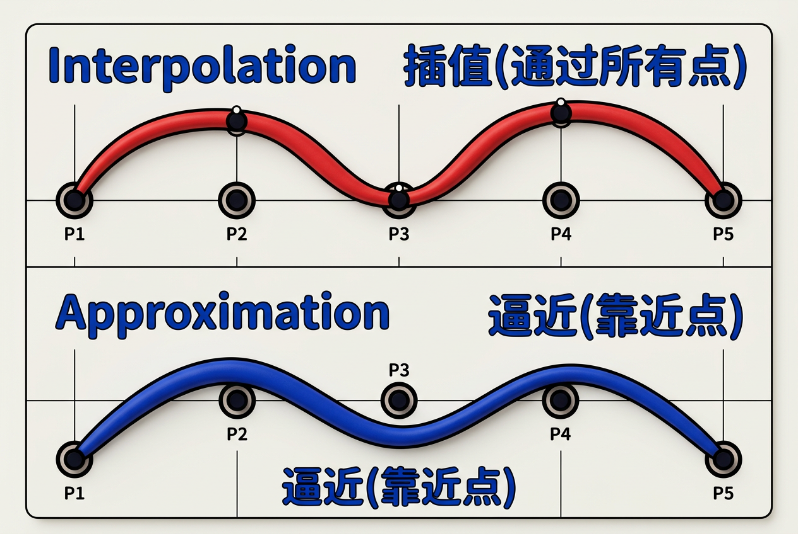
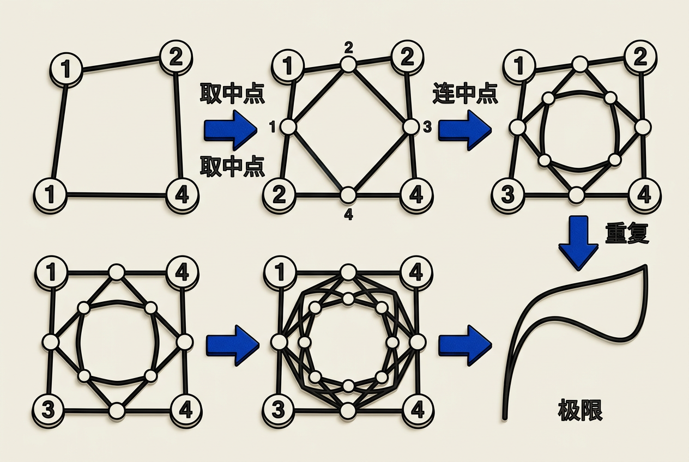
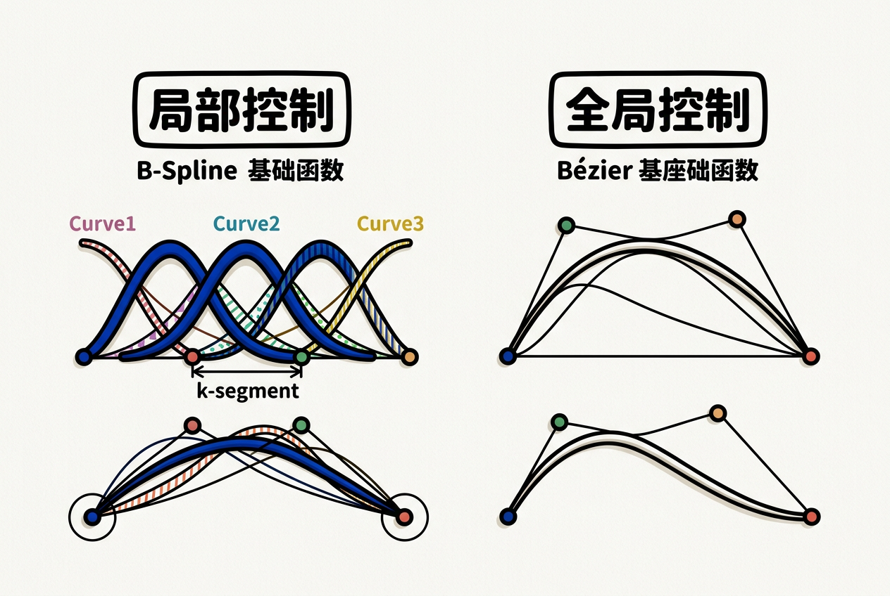

第15章：曲线（Curves）— 零基础讲义
讲义说明
本讲义基于 Steve Marschner & Peter Shirley 所著《虎书5》第5版第15章（p.383-422）。
本章是图形学的"曲线几何"——它告诉你：怎么用参数化曲线描述物体的轮廓和运动路径。
学完本章，你将真正理解 Bézier、B-Spline、Catmull-Rom、NURBS 等核心曲线概念。
本版插画采用 Guizang 材质插画风格重新绘制。
学习目标
- 理解参数化曲线 vs 隐式曲线的区别
- 掌握连续性条件：C⁰ / C¹ / C² / G¹ / G²
- 理解插值（Interpolation）vs 逼近（Approximation）
- 掌握3种插值曲线：Natural Cubic / Hermite / Cardinal（Catmull-Rom）
- 掌握2种逼近曲线：Bézier / B-Spline
- 理解de Casteljau算法——Bézier的核心
- 掌握B-Spline——工业标准曲线
15.1 参数化曲线基础
15.1.1 什么是参数化曲线
逐符号拆解：
- u = 参数（通常在0到1之间）。把它想象成"进度条"——0是起点，1是终点
- x(u) = 参数u处的x坐标
- y(u) = 参数u处的y坐标
- z(u) = 参数u处的z坐标（如果是3D曲线）
参数化 vs 隐式曲线：
| 特性 | 参数化曲线 | 隐式曲线 |
|---|---|---|
| 核心问题 | 给定u→求点P | 给定P→判断是否在线上 |
| 表示 | f(u) = (x(u), y(u)) | F(x,y) = 0 |
| 采样点 | 容易（给u值即可） | 困难（需要解方程） |
| 求切线 | 直接求f'(u) | 需要隐函数求导 |
| 动画/运动 | 天然支持（u=时间） | 不直观 |
| 举例 | f(u)=(u², u³), u∈[0,1] | x²+y²-R²=0（圆） |
15.1.2 复合曲线
现实中的曲线通常不是由单个函数定义的——而是分段定义的不同函数拼接而成。
例子：门的轮廓 = 直线 + 圆弧 + 直线 + 圆弧
分段表示：
f(u) = f₁(2u) if 0 ≤ u ≤ 0.5 (前半段：直线)
f₂(2u - 1) if 0.5 < u ≤ 1 (后半段：圆弧)每个fᵢ称为一个段（segment或piece），段与段之间的连接叫做结点（knot）。
15.2 连续性等级

15.2.1 Cⁿ连续性的定义
对于两条曲线段f₁(u)和f₂(u)，在拼接点u=1（f₁的终点=f₂的起点）：
| 等级 | 条件 | 几何意义 | 视觉表现 |
|---|---|---|---|
| C⁰ | f₁(1) = f₂(0) | 位置连续 | 没有缺口 |
| C¹ | f'₁(1) = f'₂(0) | 切线方向+大小都相同 | 平滑无折角 |
| C² | f''₁(1) = f''₂(0) | 曲率连续 | 完全平滑 |
| C³ | 三阶导数连续 | 曲率变化率连续 | 几乎察觉不到 |
关键区分：Cⁿ vs Gⁿ（几何连续）
| 等级 | 条件 | 等同于 |
|---|---|---|
| C¹ | f'₁(1) = f'₂(0) | 切线方向+大小都相同（强条件） |
| G¹ | f'₁(1) ∥ f'₂(0) | 切线方向相同即可，大小可以不同（弱条件） |
15.2.2 图形学中的实际选择
| 应用场景 | 所需连续性 | 原因 |
|---|---|---|
| 动画运动路径 | C² | 避免突然加速/减速（视觉上更平滑） |
| 3D模型轮廓线 | C¹ | 足够平滑，锐利边缘用折角 |
| 字体/标志设计 | G¹ | 视觉效果OK，实现简单 |
| 空气动力学形状 | C³+ | 避免湍流产生 |
因为我们的眼睛对切线方向的突变很敏感（能看出"折角"），但对切线大小的变化不敏感。G¹确保了两段曲线方向的连续性，看起来就是平滑的。而C¹要求切线大小也相同——这在字体设计中是不必要的限制。
15.3 曲线属性
15.3.1 局部控制（Locality）
局部控制 = "改1个控制点只影响附近区域，不影响整条曲线"
这是图形学中极为重要的性质。为什么？
- 设计师体验：拖动一个控制点，只想微调曲线的一小段，不想整条曲线都变
- 编辑效率：局部修改不需要重新计算整条曲线
- 协作：多个人可以同时编辑不同区域
| 曲线类型 | 局部控制？ | 移动1个点影响 |
|---|---|---|
| 单条高次插值多项式 | ✗ 非局部 | 整条曲线 |
| 分段三次Hermite | ✓ 局部（但需指定切线） | ≤2段 |
| Catmull-Rom样条 | ✓ 局部 | ≤4段 |
| Bézier曲线 | ✗ 分段局部 | 1段（每段独立） |
| B-Spline | ✓ 局部 | k段（k=阶数） |
15.3.2 为什么用分段三次曲线？
| 方案 | 优势 | 劣势 |
|---|---|---|
| 单条高次多项式 | 数学简单 | 非局部、易振荡（Runge现象） |
| 多段低次多项式 | 局部控制、灵活、稳定 | 需要处理段间连续性 |
为什么是三次（Cubic）？
- 次数太低（线性）→ 只有C⁰，不平滑
- 次数太高 → 振荡、非局部
- 三次 = "最小曲率" + 数值稳定 + 简单 ——黄金平衡点
15.4 插值曲线（Interpolating Curves）
15.4.1 插值 vs 逼近

| 特性 | 插值（Interpolation） | 逼近（Approximation） |
|---|---|---|
| 是否通过控制点 | ✓ 精确通过 | ✗ 只受控制点"吸引" |
| 平滑性 | 可能振荡 | 通常更平滑 |
| 局部控制 | 差（高次）或好（分段低次） | 好（如B-Spline） |
| 典型应用 | 动画路径（必须通过关键点） | CAD建模（平滑外形） |
| 例子 | Catmull-Rom, Hermite | Bézier, B-Spline |
15.4.2 Lagrange插值
给定n个点，存在唯一的n-1次多项式通过所有点。
问题：n较大时，曲线会剧烈振荡——这叫Runge现象。比如用10次多项式通过10个均匀点，两端会剧烈摆动。
15.5 三次插值
15.5.1 Hermite三次曲线
4个参数确定一条三次曲线：
- 起点位置 p₀
- 起点切线 f'(0) = m₀
- 终点位置 p₃
- 终点切线 f'(1) = m₁
Hermite形式：
逐项拆解——这四个基函数的含义：
| 基函数 | 在t=0的值 | 在t=1的值 | 导数t=0 | 导数t=1 | 作用 |
|---|---|---|---|---|---|
| H₀(t)=2t³-3t²+1 | 1 | 0 | 0 | 0 | 控制起点位置 |
| H₁(t)=t³-2t²+t | 0 | 0 | 1 | 0 | 控制起点切线 |
| H₂(t)=-2t³+3t² | 0 | 1 | 0 | 0 | 控制终点位置 |
| H₃(t)=t³-t² | 0 | 0 | 0 | 1 | 控制终点切线 |
15.5.2 自然三次样条（Natural Cubic Spline）
C²连续 + 通过所有点——这是工业级插值曲线的标准。
约束分析：
- n段三次曲线 → 4n个系数需要确定
- 段间C⁰：n-1个约束
- 段间C¹：n-1个约束
- 段间C²：n-1个约束
- 总约束：3(n-1) = 3n-3
- 自由度：4n - 3(n-1) = n+3
自然边界条件：起点二阶导=0，终点二阶导=0 → 还剩余n+1个自由度 = n个点 ✓
15.5.3 Catmull-Rom样条（Cardinal样条）
Catmull-Rom = 游戏行业的默认插值曲线
思想：切线由相邻点的连线自动计算——用户不需要手动指定切线。
逐符号拆解：
- p_{i+1} - p_{i-1} = 前一个点到后一个点的向量——穿过当前点的"趋势"
- (1-tension)/2 = tension=0时，切线大小=相邻点距离的一半（标准Catmull-Rom）
- tension = 曲线的"紧绷度"参数（0=标准，越大越松，越小越紧）
为什么Catmull-Rom这么流行？
- ✓ C¹连续（足够平滑）
- ✓ 局部控制（移动1个点影响≤4段）
- ✓ 不需要指定切线（自动计算）
- ✓ 计算简单
15.6 逼近曲线——Bézier

15.6.1 Bézier曲线的核心性质
| 性质 | 含义 | 为什么重要 |
|---|---|---|
| 端点插值 | 起点=第一个控制点，终点=最后一个 | 容易控制曲线的起点和终点 |
| 切线方向 | 起点切线 = p₁-p₀，终点切线 = pₙ-p_{n₋₁} | 容易控制段间连续性（共享切向量） |
| 凸包性质 | 整条曲线在控制点的凸包内 | 碰撞检测、裁剪加速 |
| 仿射不变性 | 变换控制点 = 变换曲线（先变换后求值=先求值后变换） | 物体变换时曲线自动跟着变 |
| 变化减小性质 | 直线与曲线的交点 ≤ 直线与控制多边形的交点 | 曲线的波动不会比控制多边形更剧烈 |
15.6.2 Bernstein基函数
逐符号拆解：
- C(n,i) = 组合数 "n选i" = n!/(i!(n-i)!)
- uⁱ = 参数u的i次方
- (1-u)^{n-i} = 互补参数的n-i次方
- B_{i,n}(u) = 第i个控制点在参数u处的权重
举例：三次Bézier（n=3）的4个基函数：
| i | B_{i,3}(u) | 在u=0的值 | 在u=1的值 |
|---|---|---|---|
| 0 | (1-u)³ | 1 | 0 |
| 1 | 3u(1-u)² | 0 | 0 |
| 2 | 3u²(1-u) | 0 | 0 |
| 3 | u³ | 0 | 1 |
15.6.3 de Casteljau算法
核心思想——几何直觉：
- 在每对相邻控制点的连线上取比例为u的点
- 得到n个新点（原n+1个点变成n个点）
- 重复步骤1-2，直到只剩1个点
- 这个最后的点就是f(u)
# de Casteljau算法——计算Bézier曲线上的点
def decasteljau(control_points, u):
pts = control_points.copy() # 复制控制点（不修改原数据）
while len(pts) > 1: # 直到只剩一个点（结果点）
new_pts = [] # 本轮插值生成的点
for i in range(len(pts) - 1): # 对每对相邻点
x = (1-u) * pts[i].x + u * pts[i+1].x # 线性插值x
y = (1-u) * pts[i].y + u * pts[i+1].y # 线性插值y
new_pts.append((x, y)) # 保存新点
pts = new_pts # 下一轮用新点继续
return pts[0] # 返回最终曲线上的点时间复杂度：O(n²) —— n+1个控制点，每轮减少1个，共n轮，每轮做O(n)次操作。
15.6.4 分段Bézier曲线的连续性
两段Bézier曲线（控制点分别为p₀,p₁,p₂,p₃和q₀,q₁,q₂,q₃）拼接：
- C⁰：p₃ = q₀（共享端点）
- C¹：p₃ - p₂ = q₁ - q₀（切线方向+大小相同）即 p₃ - p₂ = q₁ - q₀
- G¹：p₃ - p₂ ∥ q₁ - q₀（切线方向相同即可）
Bézier的控制点就是曲线上的点（端点特性和凸包性质），设计师可以直观地看到"拖动这个点，曲线往这边弯"。B-Spline有更好的局部控制和任意连续性，但数学更复杂——设计师不需要想这些。CAD需要精确的C²连续和局部控制（修改一个区域不影响整个零件），所以用B-Spline。
15.7 逼近曲线——B-Spline

15.7.1 B-Spline的核心特性
| 性质 | Bézier | B-Spline |
|---|---|---|
| 局部控制 | ✗ 移动1个点影响整条曲线 | ✓ 移动1个点只影响k段 |
| 连续性 | 需要手动保证（共享端点+切线） | 自动C^{k-2} |
| 凸包性质 | ✓ 整体凸包 | ✓ 局部凸包（每个段在相应控制点的凸包内） |
| 变化减小 | ✓ | ✓ |
| 通过控制点 | 首尾点通过 | 一般不通过 |
15.7.2 B-Spline的阶数k
| k（阶） | 段内次数 | 连续性 | 应用 |
|---|---|---|---|
| 2 | 1（线性） | C⁰ | 折线/多边形 |
| 3 | 2（二次） | C¹ | 简单平滑曲线 |
| 4 | 3（三次） | C² | 工业标准（最常用） |
| 5 | 4 | C³ | 高要求应用 |
15.7.3 Cox-de Boor递归公式
B-Spline基函数的定义：
15.7.4 均匀B-Spline vs 非均匀B-Spline（NURBS）
| 类型 | 结点分布 | 优势 | 劣势 |
|---|---|---|---|
| 均匀B-Spline | 所有结点等距（0,1,2,3,...） | 简单、计算快 | 不能控制局部细节密度 |
| 非均匀B-Spline | 结点可不等距（0,0,0,1,2,3,3,3） | 灵活、可制造尖角 | 实现复杂 |
| NURBS | 非均匀 + 带权 | 可精确表示圆/圆锥 | 更复杂 |
结点塞紧（Knot Insertion）制造尖角：
在B-Spline中，如果多个结点在同一个位置（重复结点），曲线在该点的连续性会降低。3次重复 → C⁰（产生尖角）。这是B-Spline制造尖角的标准方法。
- k=2 → 折线
- k=4，均匀 → 平滑曲线
- k=4，非均匀 → 可制造尖角
- NURBS → 精确表示圆锥曲线
15.8 3D曲线与总结
15.8.1 3D曲线
核心思想：所有2D曲线理论直接推广到3D——只是控制点从2D向量变成3D向量。
应用场景：
- 3D动画路径：相机沿曲线运动（如过山车视角）
- 3D模型轮廓：头发、布料、绳索的曲线表示
- 3D网格编辑：用曲线驱动网格变形
15.8.2 术语对照表
| 英文 | 中文 | 一句话 |
|---|---|---|
| Parametric Curve | 参数化曲线 | f(u) = (x(u), y(u)) |
| Continuity Cⁿ | Cⁿ连续性 | n阶导数连续 |
| Interpolation | 插值 | 曲线通过控制点 |
| Approximation | 逼近 | 曲线靠近控制点 |
| Hermite Curve | Hermite曲线 | 指定位置+切线 |
| Catmull-Rom | Catmull-Rom样条 | 自动切线插值，游戏首选 |
| Bézier Curve | Bézier曲线 | 逼近型，设计首选 |
| De Casteljau | de Casteljau算法 | Bézier的核心算法 |
| B-Spline | B样条 | 局部控制，CAD首选 |
| NURBS | 非均匀有理B样条 | CAD工业标准 |
| Knot | 结点 | 曲线段的拼接点 |
| Convex Hull | 凸包 | 控制点的最小凸多边形 |
15.8.3 核心选择指南
| 需求 | 推荐的曲线 | 原因 |
|---|---|---|
| 通过所有关键点 + 简单 | Catmull-Rom | 自动切线，C¹，局部 |
| 交互式设计（PS/AI） | Bézier | 直观的"手柄"控制 |
| CAD/CAM精确建模 | B-Spline / NURBS | C²，局部控制，任意连续性 |
| 动画曲线编辑 | Hermite + TCB | Maya/Blender切线编辑器 |
| 字体/矢量图形 | 分段Bézier | PostScript/TrueType标准 |
历史原因 + 计算简单。PostScript（1984年）选择了Bézier作为标准，之后TrueType（苹果）也选择了Bézier。Bézier只需要G¹连续就能看起来平滑，而且求值可以用de Casteljau（稳定、简单）。B-Spline虽然更好的局部控制，但实现更复杂，80年代的硬件吃不消。
15.8.4 关键公式速查
| 名称 | 公式 |
|---|---|
| 参数化曲线 | f(u) = (x(u), y(u), z(u)) |
| Hermite三次 | f(t) = H₀(t)p₀ + H₁(t)m₀ + H₂(t)p₃ + H₃(t)m₁ |
| Catmull-Rom切线 | mᵢ = (1-t)/2 · (p_{i+1} - p_{i-1}) |
| Bernstein基 | B_{i,n}(u) = C(n,i) · uⁱ · (1-u)^{n-i} |
| Bézier曲线 | f(u) = Σ pᵢ · B_{i,n}(u) |
| de Casteljau | 递归线性插值直到1个点 |
| B-Spline | f(t) = Σ pᵢ · b_{i,k}(t) |
| Cox-de Boor | b_{i,k}(t) = 加权组合b_{i,k-1}和b_{i+1,k-1} |
15.8.5 数值例子：de Casteljau逐步计算
假设有4个控制点：p₀=(0,0), p₁=(2,4), p₂=(4,0), p₃=(6,2)，计算u=0.5处的曲线点：
第1轮（4个点→3个点）：
q₀ = (1-0.5)·p₀ + 0.5·p₁ = 0.5·(0,0) + 0.5·(2,4) = (1, 2)
q₁ = (1-0.5)·p₁ + 0.5·p₂ = 0.5·(2,4) + 0.5·(4,0) = (3, 2)
q₂ = (1-0.5)·p₂ + 0.5·p₃ = 0.5·(4,0) + 0.5·(6,2) = (5, 1)第2轮（3个点→2个点）：
r₀ = (1-0.5)·q₀ + 0.5·q₁ = 0.5·(1,2) + 0.5·(3,2) = (2, 2)
r₁ = (1-0.5)·q₁ + 0.5·q₂ = 0.5·(3,2) + 0.5·(5,1) = (4, 1.5)第3轮（2个点→1个点——结果）：
f(0.5) = (1-0.5)·r₀ + 0.5·r₁ = 0.5·(2,2) + 0.5·(4,1.5) = (3, 1.75)所以Bézier曲线在u=0.5处的点是(3, 1.75)。验证Bernstein公式：
f(0.5) = p₀·(1-0.5)³ + p₁·3·0.5·(0.5)² + p₂·3·(0.5)²·0.5 + p₃·(0.5)³
= (0,0)·0.125 + (2,4)·0.375 + (4,0)·0.375 + (6,2)·0.125
= (0+0.75+1.5+0.75, 0+1.5+0+0.25)
= (3, 1.75) ✓15.8.6 曲线求值的数值稳定性
直接计算Bernstein多项式 vs de Casteljau算法：
| 比较项 | 直接Bernstein | de Casteljau |
|---|---|---|
| 操作类型 | 高次幂（u⁵, u⁶,...） | 仅线性插值（乘法+加法） |
| 高u时的精度 | u接近1时uⁿ会丢失精度 | 始终稳定（只做(1-u)和u的组合） |
| 对控制点变化的敏感度 | 一次改变需要重新计算所有基函数 | 自然适应 |
| 时间复杂度 | O(n) | O(n²) |
| 数值稳定性 | 一般（高次不稳定） | 优异 |
15.8.7 从曲线到曲面
所有曲线概念都可以推广到曲面：
| 曲线概念 | 曲面推广 |
|---|---|
| 参数化曲线 f(u) | 参数化曲面 f(u,v) |
| 曲线段 | 曲面片（Patch） |
| Bézier曲线 | Bézier曲面（张量积） |
| de Casteljau（1D） | de Casteljau（2D：先u方向再v方向） |
| B-Spline曲线 | B-Spline曲面（NURBS曲面） |
| Catmull-Rom曲线 | Catmull-Clark细分曲面 |
张量积曲面公式：
这是一个二维的"网格"控制点加上两个方向（u和v）的Bézier基函数。
15.8.8 常见问题（FAQ）
Q1：C¹和G¹到底有什么区别——什么时候用哪个？
A：C¹要求切线方向+大小都相同。G¹只要求方向相同。如果你在做动画路径（物体以恒定速度运动），需要C¹以确保速度连续。如果你做静态建模（如字体轮廓），G¹就够了——人眼看不出来。
Q2：什么是"Runge现象"？
A：用高次多项式通过一组均匀分布的点时，曲线两端会剧烈振荡。例如用10次多项式通过10个点——曲线在第一个点和最后一个点附近会"甩出去"再绕回来。这就是图形学避免高次插值的原因。
Q3：Catmull-Rom和B-Spline有什么区别？
A：Catmull-Rom是插值曲线（通过所有点），B-Spline是逼近曲线（靠近但不通过）。Catmull-Rom更适合动画路径（必须经过关键点），B-Spline更适合CAD建模（平滑外形）。Catmull-Rom是C¹，三次B-Spline是C²。
Q4：Bézier的"凸包性质"有什么用？
A：凸包性质保证了曲线不会"跑出"控制点围成的区域。这在渲染中用于裁剪——如果一条Bézier曲线的整个凸包都不在屏幕上，就不用画它了。这是加速矢量图形渲染的关键。
Q5：NURBS中的"R"（Rational）是什么意思？
A：Rational = 有理数 = 每个控制点带一个权重（w）。通过调整权重，可以精确表示圆、椭圆、圆锥曲线——而普通的B-Spline只能近似。这就是为什么CAD系统都用NURBS——因为需要精确的圆。
Q6：为什么三次曲线（Cubic）这么特殊？
A：三次曲线是"最小曲率+最大可控性"的平衡点。线性（一次）太平滑，二次曲率恒定（抛物线），三次可以有变化的曲率。同时三次曲线的计算非常简单（4个系数）。在图形学中，三次Bézier和三次B-Spline是最常用的。
绝对不要用100次Bézier或100次多项式！正确做法是：用Catmull-Rom样条（C¹+插值）或三次B-Spline（C²+逼近）。每个段只用4个控制点，段间自动保持连续性。100个控制点 → 约97个三次曲线段 → 平滑、稳定、局部控制。
15.8.9 工程实战参考
| 领域 | 曲线类型 | 工具/库 |
|---|---|---|
| 字体渲染 | 二次/三次 Bézier | FreeType, HarfBuzz |
| 矢量图形 | 三次 Bézier | Skia, Cairo, NanoVG |
| 3D建模 | NURBS | OpenCASCADE, Rhino |
| 游戏引擎 | Catmull-Rom | Unity AnimationCurve, UE4 Spline Component |
| CAD/CAM | NURBS | STEP, IGES 工业标准 |
| 数据可视化 | Catmull-Rom / 三次B-Spline | D3.js, Chart.js |
15.8.11 曲线在工程软件中的具体实现
Adobe Illustrator中的钢笔工具：
// 三次Bézier在AI中的数据结构
struct BezierSegment {
Point anchor_in; // 入点（前一段的终点）
Point handle_in; // 入点手柄方向
Point handle_out; // 出点手柄方向
Point anchor_out; // 出点
};
// G¹连续条件：handle_out和下一个handle_in在一条直线上
// C¹连续条件：handle_out和下一个handle_in方向相同、长度相同
// AI允许用户独立拉长手柄长度（改变曲率，保持G¹）Unity中的AnimationCurve：
// Unity使用Catmull-Rom/Cubic Bézier作为动画曲线
AnimationCurve curve = new AnimationCurve();
curve.AddKey(0.0f, 0.0f); // 时间0，值0
curve.AddKey(1.0f, 1.0f); // 时间1，值1
curve.AddKey(2.0f, 0.0f); // 时间2，值0
// 在t=1.5秒时求值（自动Catmull-Rom插值）
float value = curve.Evaluate(1.5f);CSS中的cubic-bezier()：
/* CSS动画中的三次Bézier缓动函数 */
/* cubic-bezier(x1, y1, x2, y2) 其中(x1,y1)和(x2,y2)是两个手柄 */
transition: transform 0.3s cubic-bezier(0.42, 0.0, 0.58, 1.0); /* ease-in-out */
transition: opacity 0.5s cubic-bezier(0.25, 0.1, 0.25, 1.0); /* ease */15.8.12 曲线学习的"路线图"
| 学习阶段 | 要掌握的内容 | 练习项目 |
|---|---|---|
| 入门 | 参数化曲线概念、C⁰/C¹/C²区别 | 用纸笔画三种连续曲线 |
| 基础 | Catmull-Rom实现、Bézier实现 | 用Python/JS实现交互式曲线编辑器 |
| 进阶 | de Casteljau算法、B-Spline原理 | 实现de Casteljau细分、B-Spline求值 |
| 高级 | NURBS、Cox-de Boor递归 | 实现NURBS曲线编辑器 |
| 专业 | 曲面（Bézier Patch / NURBS Surface） | 实现Bézier曲面求值（张量积） |
15.8.13 全章总结
- 3种连续性：C⁰（位置）/ C¹（切线）/ C²（曲率）
- 3种插值：Natural Cubic / Hermite / Cardinal（Catmull-Rom）
- 2种逼近：Bézier（设计）/ B-Spline（CAD）
- de Casteljau = 数值稳定的Bézier算法
- Cox-de Boor = 构造B-Spline基函数
- Catmull-Rom = "插值过点+局部+简单"——游戏首选
- Bézier = "逼近+凸包+仿射不变"——设计首选
- B-Spline = "任意连续性+局部+通用"——CAD首选